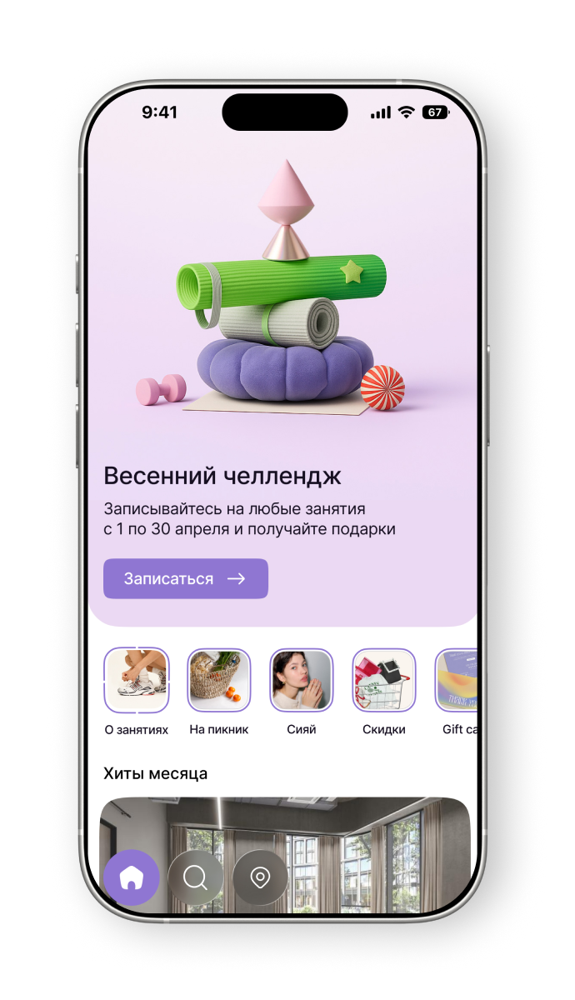

Сценарий поиска занятия через карту заходит в тупик: пользователь просто смотрит точки на карте, но не продолжает путь к выбору и записи на занятия. Это снижает вовлечённость и эффективность ключевого сценария поиска.
Задача
Сделать сценарий поиска через карту непрерывным и вовлекающим:
обеспечить переход из карты в карточку мероприятия;
дать возможность сравнивать несколько событий;
упростить шаги до записи/покупки.

После
Результат
Выросло количество пользователей на X% в течение Y месяцев;
Пользователи стали доходить до записи на занятие через карту в 2 раза быстрее;
Выросла конверсия из просмотра на карте в открытие карточки занятия и оплату;
Выросла вовлеченность: пользователи чаще сравнивают и сохраняют мероприятия
Как проверила
Проверила прототип на пользователях юзабилити-тестами.